Cinemateca
Portuguese Cinemateca rebrand. Logotype and stationary design, as well as communication materials for a film
cycle celebrating portuguese women filmmakers and directors.
(2021 & 2022)
(2021 & 2022)
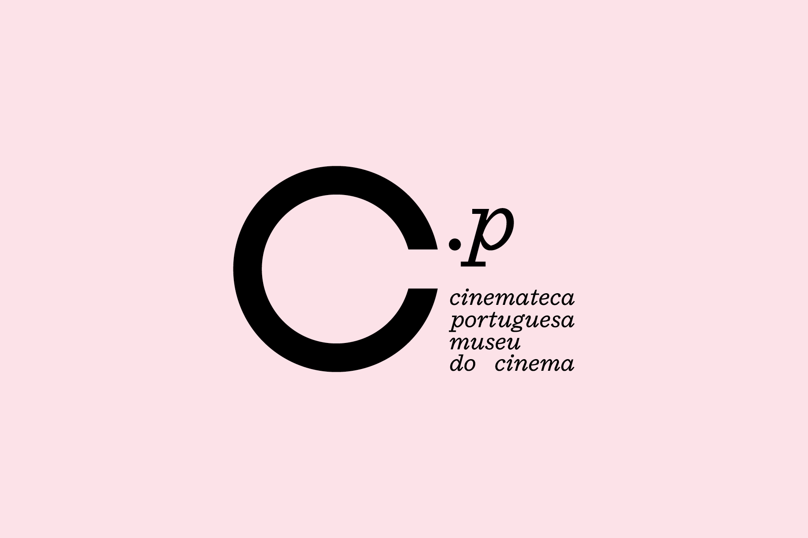
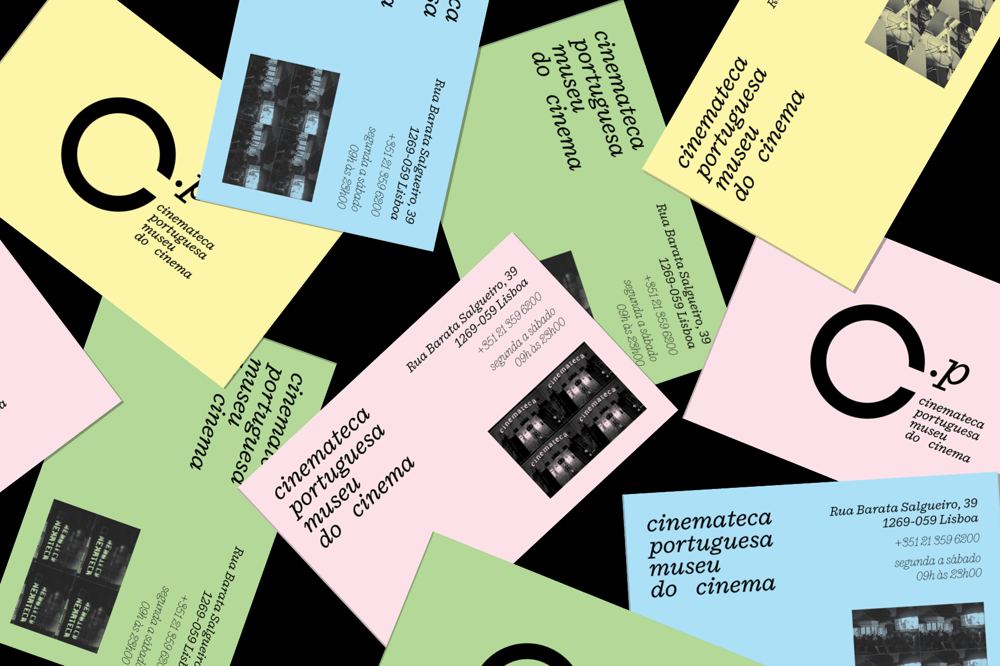
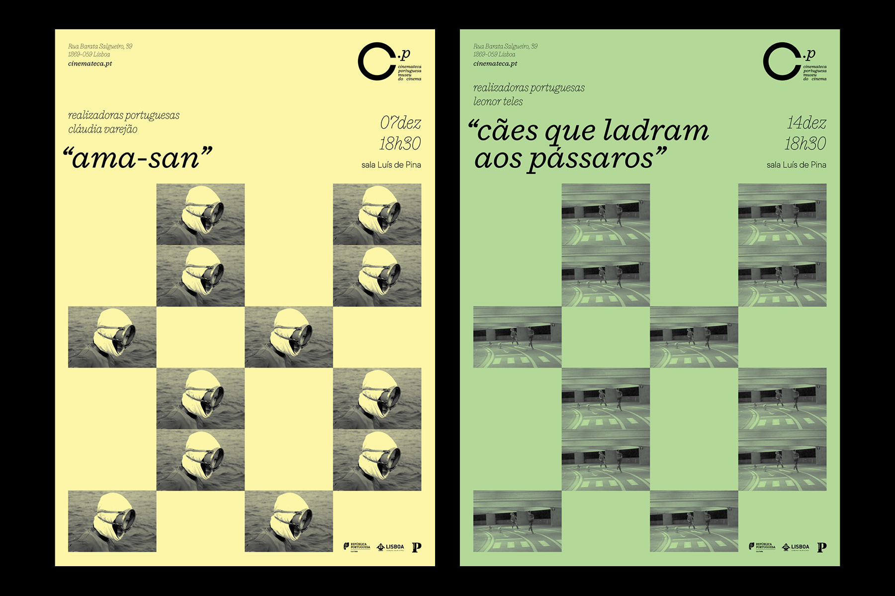
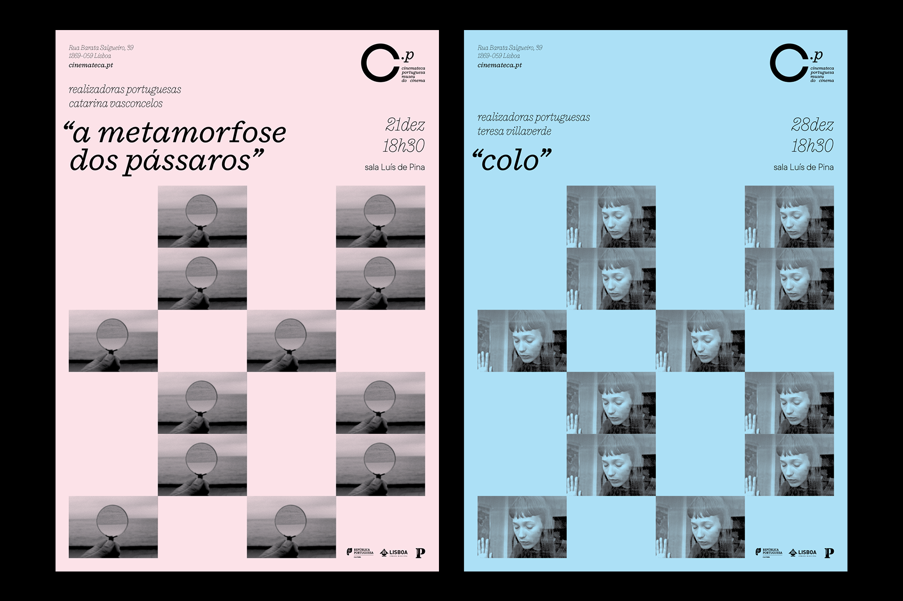
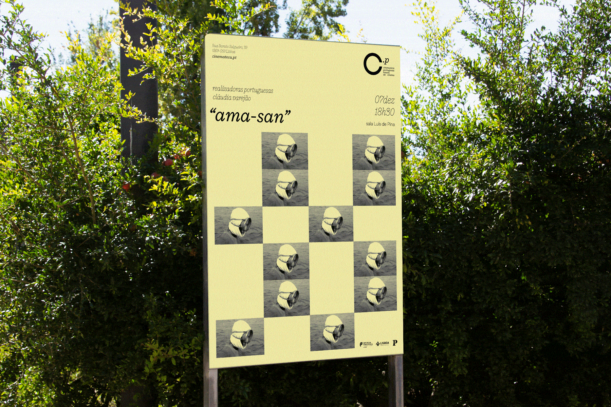
 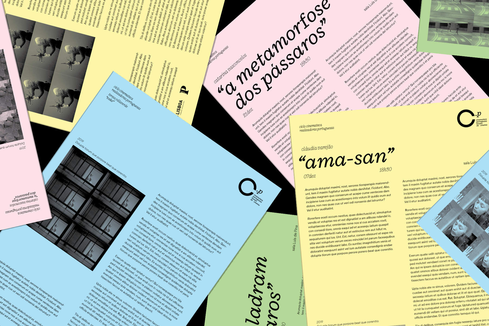
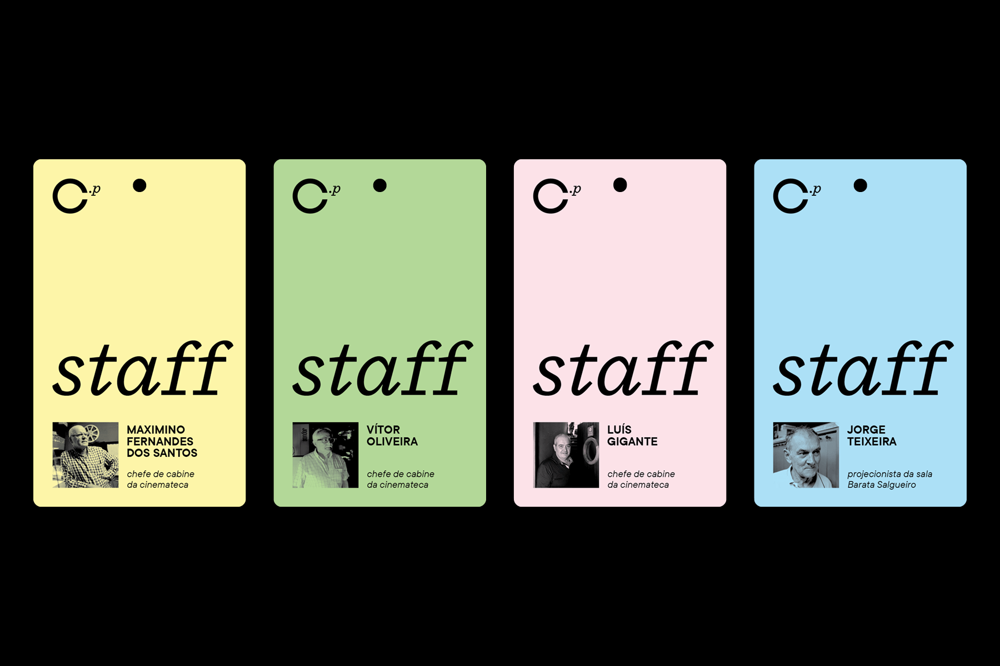
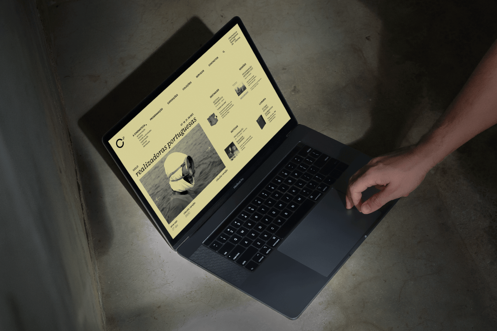
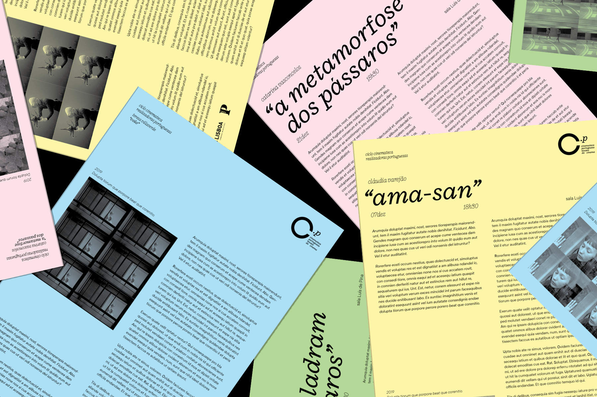
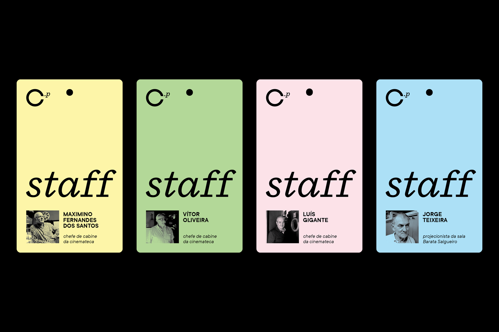
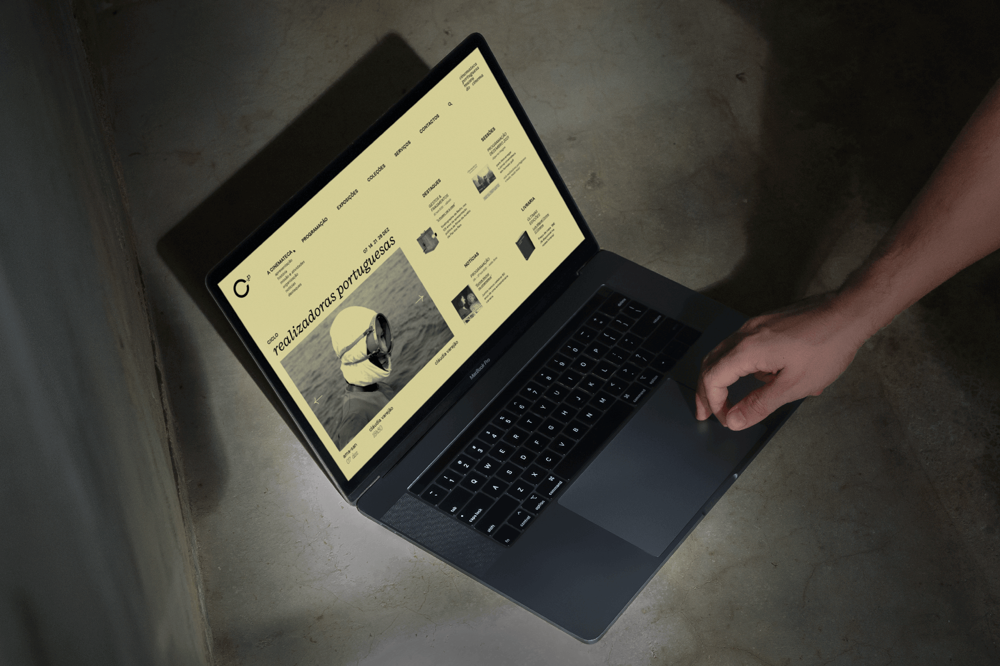
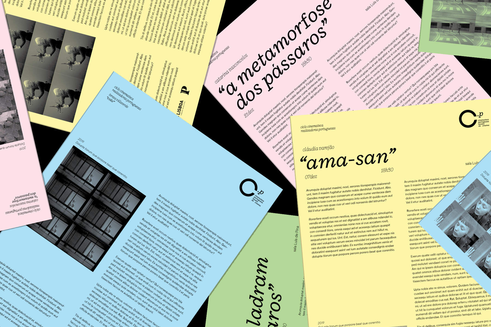
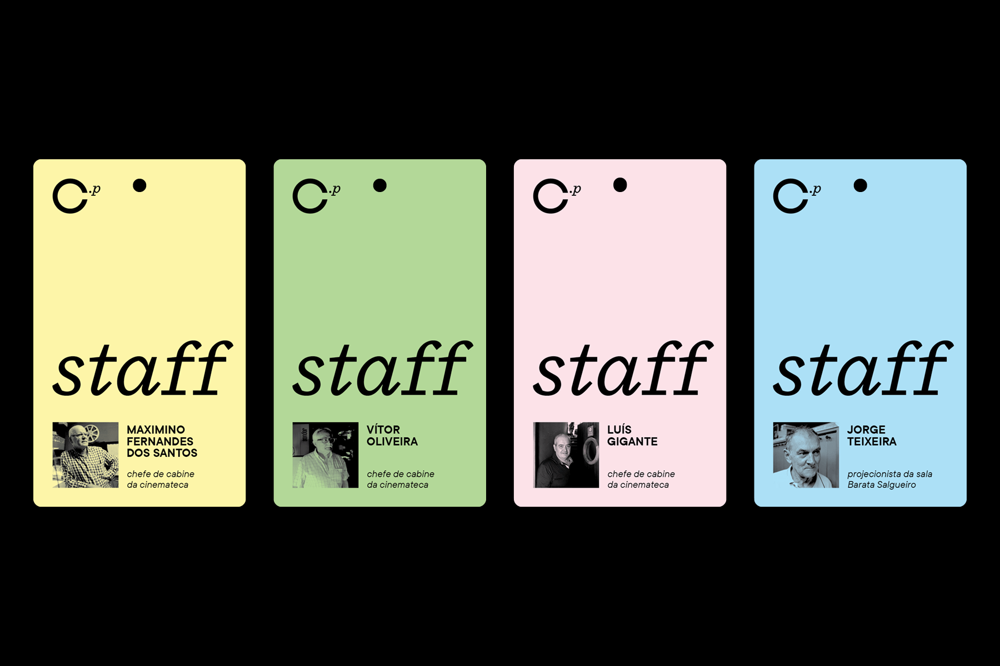
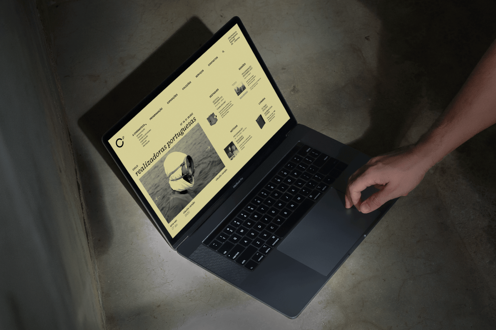